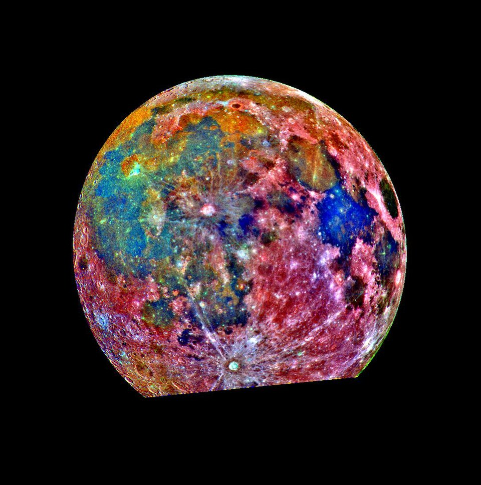
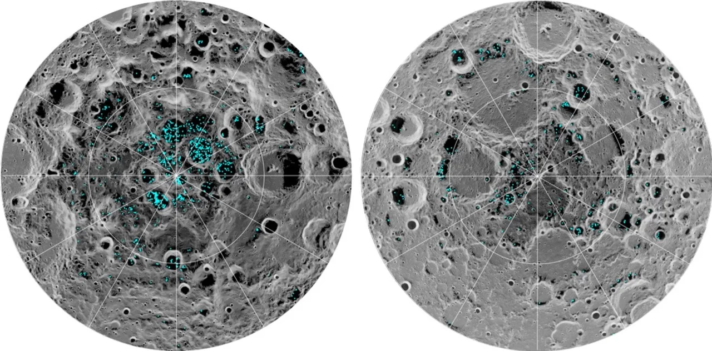
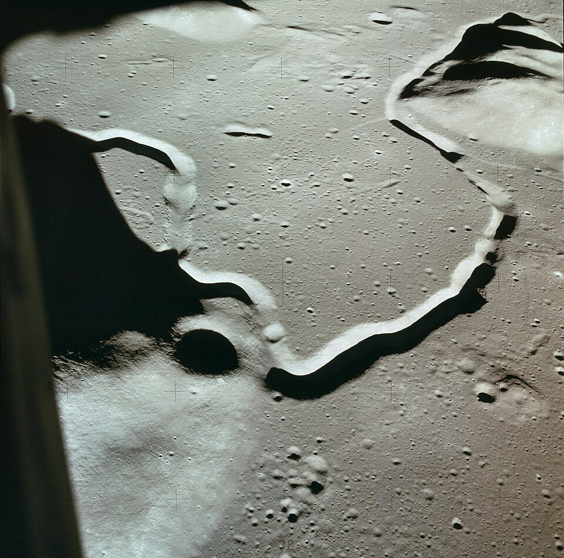
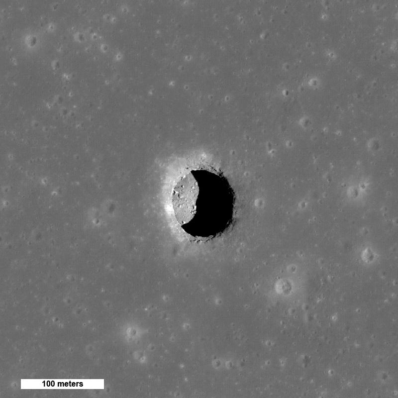

Mapping the Moon’s minerals and caves
Every method used so far to find what the Moon is made of and where it is hollow, and what each one found. Status on 6 November 2026.
Methods
Nine ways of looking, from the top microns of the soil to kilometres down.
| Technique | Detects | Depth reached | Flown on |
|---|---|---|---|
| Reflectance spectroscopy, UV to near-IR | Pyroxene, olivine, plagioclase, spinel, Fe and Ti oxides, OH / H₂O | Top microns | Clementine, Kaguya, M³, LROC WAC, IIRS |
| Thermal infrared | Silica content, surface temperature, cold traps | Top millimetres | LRO Diviner |
| Gamma-ray spectroscopy | Th, K, U, Fe, Ti | ~30 cm | Apollo 15–16, Lunar Prospector, Kaguya, Danuri |
| Neutron spectroscopy | Hydrogen | ~1 m | Lunar Prospector, LRO LEND |
| X-ray fluorescence | Mg, Al, Si, Ca, Fe, Na | Top microns | Apollo 15–16, SMART-1, Chandrayaan-1 and -2 |
| Radar imaging and sounding | Ice candidates, buried voids, layer boundaries | Metres to kilometres | Mini-SAR, Mini-RF, Kaguya LRS, DFSAR |
| Gravity gradiometry | Missing mass, empty tubes | Kilometres | GRAIL |
| High-resolution imaging | Pits, overhangs, collapsed channels | Surface | Lunar Orbiter, Kaguya TC, LROC NAC |
| In situ and returned samples | Exact mineralogy, ages, isotopes, water content | Up to 3 m (Apollo drill cores) | Surveyor, Apollo, Luna, Chang'e, Chandrayaan-3 |
Minerals
Highlands of anorthosite, maria of basalt, and one nearside region rich in thorium: first from samples, then mapped from orbit.
- 1969–72Apollo 11–17
382 kg of rock and soil from six nearside sites.
- Apollo result
Highlands are anorthosite (calcium-rich plagioclase); maria are basalt (pyroxene, plagioclase, olivine, ilmenite). This is the evidence for a global magma ocean.
- Apollo result
Three minerals first described from lunar samples: armalcolite, tranquillityite, pyroxferroite.
- Apollo result
KREEP identified: material rich in potassium, rare-earth elements and phosphorus, the last liquid of the magma ocean.
- 1970–76Luna 16, 20, 24
About 300 g returned robotically from three eastern nearside sites.
- 2020Chang'e-5
1,731 g from Oceanus Procellarum. Basalts dated to about 2.0 billion years, the youngest returned so far.
- 2022Chang'e-5
Changesite-(Y), a new phosphate mineral, approved as the sixth mineral discovered on the Moon.
- 2024Chang'e-6
1,935.3 g from the South Pole–Aitken basin: the first samples from the farside. Source
- 2024–25Chang'e-6
Farside volcanism dated at 4.2 and 2.8 billion years; basalt source mantle holds 1–1.5 µg/g water, drier than the nearside. Source
- 1960s–70sTelescopes
Visible and near-infrared reflectance spectra separate high-titanium from low-titanium maria before any global orbiter.
- 1971–72Apollo 15, 16
Orbital X-ray and gamma-ray spectrometers map Al/Si, Mg/Si and thorium along the equatorial ground tracks.
- 1990, 1992Galileo
Multispectral flyby images show the South Pole–Aitken basin as an iron-rich anomaly on the farside.
- 1994Clementine
First global multispectral map: 11 bands from ultraviolet to near-infrared at 100–200 m per pixel. First global iron and titanium oxide maps.
- 1998–99Lunar Prospector
Gamma-ray spectrometer maps thorium, potassium and iron globally. Thorium concentrates in one nearside region, the Procellarum KREEP Terrane.
- 2003–06SMART-1
Compact X-ray spectrometer D-CIXS measures Mg, Al, Si, Ca and Fe during solar flares.
- 2007–09Kaguya
Multiband Imager and Spectral Profiler find pure anorthosite (over 98% plagioclase) in crater central peaks across the highlands.
- 2007–09Kaguya
Olivine-rich exposures located around large impact basins; gamma-ray spectrometer produces the first global uranium map.
- 2007–09Chang'e-1
First microwave radiometer in lunar orbit; brightness temperatures used to estimate regolith thickness and the helium-3 inventory.
- 2008–09Chandrayaan-1 M³
Moon Mineralogy Mapper: 85 bands, 0.43–3.0 µm, 140 m per pixel, near-global. The reference mineral map still in use.
- 2011M³ result
New rock type identified from orbit: magnesium-spinel anorthosite, never found in the sample collection.
- 2009–LRO Diviner
Thermal infrared maps silicate composition. Silica-rich, granite-like volcanic domes confirmed at Gruithuisen and Compton–Belkovich.
- 2009–LROC WAC
Seven-band camera (321–689 nm) yields a titanium dioxide map of the maria at about 400 m per pixel.
- 2019–Chandrayaan-2
CLASS X-ray spectrometer produces the first global sodium map; IIRS extends spectra to 5 µm.
- 2022–Danuri
Korean orbiter carries a gamma-ray spectrometer and ShadowCam, which images inside permanently shadowed craters.



- 1967–68Surveyor 5, 6, 7
Alpha-scattering instruments make the first chemical analyses on the Moon: maria are basaltic, highlands aluminium-rich.
- 1970–73Lunokhod 1, 2
Rover-mounted X-ray fluorescence spectrometers measure soil chemistry along the traverses.
- 2013Chang'e-3
Yutu rover (X-ray and infrared spectrometers) finds a young basalt type in Mare Imbrium unlike any returned sample.
- 2019–Chang'e-4
Yutu-2, first rover on the farside, detects olivine and low-calcium pyroxene in Von Kármán crater, possibly excavated from the mantle.
- 2023Chandrayaan-3
Pragyan rover at 69° S: laser spectrometer confirms sulfur in situ, with Al, Ca, Fe, Cr, Ti, Mn, Si and O. Source
Water and volatiles
Hydrogen at both poles, ice in the coldest craters, traces of water in sunlit soil. Three missions built to measure it more closely were lost.
- 1994Clementine
Bistatic radar experiment suggests ice near the south pole. Result contested.
- 1998Lunar Prospector
Neutron spectrometer detects excess hydrogen at both poles.
- 1999Lunar Prospector
Deliberate crash into a south-polar crater. No water detected in the plume.
- 2009M³, Cassini, Deep Impact
Three spacecraft see the 2.8–3.0 µm absorption of OH / H₂O across the sunlit surface, strongest at high latitude.
- 2009LCROSS
Impactor strikes the permanently shadowed crater Cabeus. Ejecta contain 5.6 ± 2.9% water by mass, plus CO, H₂S, NH₃ and mercury. Source
- 2009–Mini-SAR, Mini-RF
Radar finds polar craters with ice-like polarisation. Rough rock gives the same signal; ambiguous.
- 2018M³ reanalysis
First direct detection of surface ice: near-infrared ice absorptions in permanently shadowed craters within 20° of both poles, in about 3.5% of cold traps. Source
- 2020SOFIA
Airborne telescope detects molecular H₂O at 6 µm in sunlit soil at Clavius: 100–412 ppm. Source
- 2023Chang'e-5 samples
Impact glass beads in the soil hold solar-wind-derived water.
- 2022–23LunaH-Map, Lunar Flashlight
Two NASA cubesats built to map polar hydrogen and ice. Propulsion faults: neither reached lunar orbit. Failed
- 2025PRIME-1 on IM-2
First ice-drilling attempt. Lander came to rest on its side on 6 March; the drill moved through its full range but never reached soil. Not achieved Source
- 2025Lunar Trailblazer
Orbiter built to map the form and abundance of water. Contact lost a day after launch; mission ended 31 July 2025. Lost



Caves
Skylights into lava tubes, seen from above since 2009. Radar and gravity point to conduits below; nothing has gone inside.
- 1966–67Lunar Orbiter
Photographs of sinuous rilles lead to the hypothesis that they are lava channels and collapsed lava tubes.
- 1971Apollo 15
Astronauts reach the edge of Hadley Rille, about 1.5 km wide and 300 m deep, and photograph layered basalt in its wall.
- 2009Kaguya
Terrain Camera finds the Marius Hills Hole, the first known skylight: a vertical pit about 65 m across in a rille.
- 2009–10Kaguya
Two more pits found, in Mare Tranquillitatis and Mare Ingenii. Source
- 2010–12LROC NAC
0.5 m per pixel images taken at an angle show layered walls and floors that continue under the rim: overhangs of 20 m and more.
- 2014LROC NAC
Automated search of the image archive finds over 200 pits. Most are in impact-melt ponds; under ten are in mare lava.
- 2017GRAIL
Gravity gradients show long, narrow mass deficits under the maria, consistent with buried empty tubes over 1 km wide. Source
- 2017Kaguya radar
Lunar Radar Sounder records a double echo (roof, then floor) near the Marius Hills Hole, matching a GRAIL mass deficit. Indicated tube length: tens of kilometres. Source
- 2017Modelling
Structural analysis: in lunar gravity a lava tube could stay standing at widths of kilometres.
- 2021LROC
Lunar Pit Atlas published: 281 pits with position, size and depth. Source
- 2022LRO Diviner
Shaded floor of the Mare Tranquillitatis pit holds near 17 °C through the lunar day. Open surface swings from 127 °C to −173 °C. Source
- 2024LRO Mini-RF
Reanalysis of 2010 radar images: a conduit leaves the Mare Tranquillitatis pit at 130–170 m depth, 30–80 m long and about 45 m wide. First radar evidence of an accessible cave. Source
- 2025Machine learning
Deep-learning search of orbital images reports new candidate cave entrances beyond the atlas. Source
- TodayStatus
No spacecraft has entered a lunar cave or imaged one from inside. Every tube detection is indirect. Unconfirmed
| Pit | Location | Opening | Depth | Evidence of a cave |
|---|---|---|---|---|
| Marius Hills | 14.09° N 303.23° E | ~58 × 49 m | ~40 m | Radar double echo, gravity deficit |
| Mare Tranquillitatis | 8.34° N 33.22° E | ~98 × 84 m | ~105 m | Overhang imaged, radar conduit |
| Mare Ingenii | 35.95° S 166.06° E | ~118 × 68 m | ~45–65 m | Overhang imaged |
Dimensions from LROC shadow measurements; published values differ by source and lighting.






Next
The missions that would settle the open questions: a tube under Marius Hills, and ice at the south pole.
- GIMLINASA
Ground-penetrating radar, seismometers and a gravimeter on a commercial lander and rover at the Marius Hills pit, to settle whether it opens into a tube. No launch date. Selected Sep 2026 Source
- VIPERNASA
Ice-prospecting rover with a 1 m drill for the south pole. Cancelled July 2024; reassigned to a Blue Origin lander. Late 2027 Source
- Chang'e-7CNSA
Orbiter, lander, rover and a hopper carrying a water analyser into a shadowed crater near Shackleton. August 2026 launch called off. Delayed to 2027 Source
- LunarLeaperESA candidate
Legged robot of about 15 kg with radar and gravimeter, to walk the ground above the Marius Hills tube. Not yet selected Source
- Moon Diver, DaedalusNASA JPL, ESA
Earlier concepts to lower a tethered rover (NASA JPL) or an instrumented sphere (ESA study) into a pit. Not funded
Open the map with a 6 km box over the pit, ready to download.
Sources
- Caves
LROC, mare pit craters LROC, lunar atlases JAXA, Kaguya radar, Marius Hills Chappaz 2017, GRAIL NASA, Diviner pit temperatures Carrer 2024, Nature Astronomy Eos, lava tube beneath pit PSI, GIMLI LunarLeaper, Acta Astronautica 2026
- Minerals and water
CAS, Chang'e-6 results Chang'e-6 mantle water Chandrayaan-3 sulfur Li 2018, surface ice SOFIA, molecular water LCROSS IM-2 / PRIME-1 NASA, VIPER SpaceNews, Chang'e-7 delay
- Literature, no link
Entries without a source link rest on the published record: Pieters 2009 and Colaprete 2010 (Science), Ohtake 2009 (Nature), Haruyama 2009 (GRL), Robinson 2012 (PSS), Wagner & Robinson 2014 (Icarus), Lawrence 1998 and Feldman 1998 (Science), Sato 2017 (Icarus).
- Images
NASA, NASA/JPL, NASA/GSFC/Arizona State University, ISRO/NASA/JPL-Caltech/Brown University/USGS. Public domain, retrieved from Wikimedia Commons.